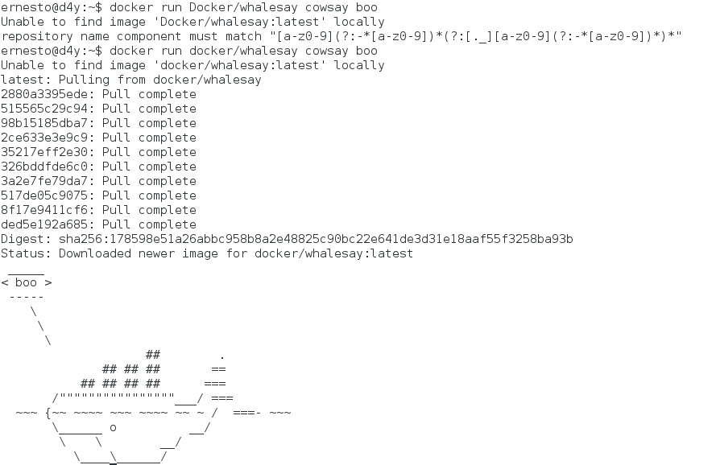
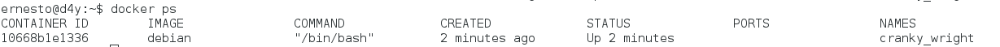
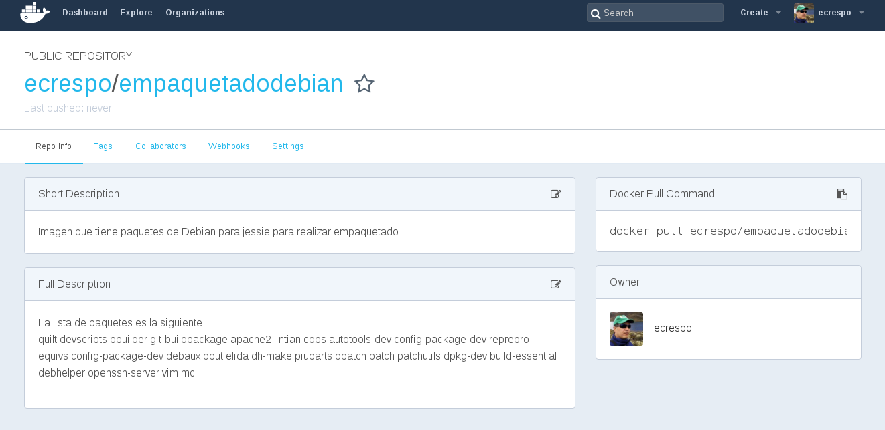

En el artículo anterior se explicó la instalación de docker, al final del mismo se realizó una prueba de funcionamiento ejecutando una imagen llamada hello-word.
Al ejecutar el comando:
# docker run hello-world
El comando retorna:
Unable to find image 'hello-world:latest' locally
latest: Pulling from library/hello-world
b901d36b6f2f: Pull complete
0a6ba66e537a: Pull complete
Digest: sha256:8be990ef2aeb16dbcb9271ddfe2610fa6658d13f6dfb8bc72074cc1ca36966a7
Status: Downloaded newer image for hello-world:latest
Hello from Docker.
This message shows that your installation appears to be working correctly.
La parte subrayada indica que la imagen no está descargada localmente y procede a descargarla.
Si se vuelve a ejecutar el comando ya el mensaje no aparece ya que la imagen hello-work ya se encuentra descargada.
$docker run hello-world
Hello from Docker.
Podemos listar las imágenes existentes con el siguiente comando:
$ docker images
REPOSITORY TAG IMAGE ID CREATED VIRTUAL SIZE
hello-world latest 0a6ba66e537a 10 weeks ago 960 B
Se muestra el repositorio, la etiqueta que maneja la imagen, el identificador de la imagen, la fecha de creado y el tamaño de la imagen.
Ahora probemos con una imagen que nos muestra un mensaje de la vaca que dice boo (pueden ver la info de la imagen whalesay desde acá):
$ docker run docker/whalesay cowsay boo
A continuación se muestra una imagen del resultado de la ejecución del comando anterior:

Como ven la ejecución de la imagen devuelve un resultado.
Al volver a listar las imagenes se tiene:
$ docker images
REPOSITORY TAG IMAGE ID CREATED VIRTUAL SIZE
hello-world latest 0a6ba66e537a 10 weeks ago 960 B
docker/whalesay latest ded5e192a685 7 months ago 247 MB
Para eliminar una imagen se ejecuta docker rm idimagen:
$docker rmi ded5e192a685
Untagged: docker/whalesay:latest
Deleted: ded5e192a685b2c5f048ea98ca24f4c8c4dccc012185448a0247b49b24645007
Deleted: 8f17e9411cf6e7467e630b369a0216b582a8a811901befc800de41537bde1f04
Deleted: 517de05c9075311e28a12b52c38fbc4d46c47750efc71a6d88ba40a7547fd89d
Deleted: 3a2e7fe79da7865d735739288585f82c694088fc1163b415de7f5f5db12671c7
Deleted: 326bddfde6c0dd63908afd6b62b3db9cbc3d33ab23497493691e6230e051dbae
Deleted: 35217eff2e300e3b9a5402920a71ede310fe5e47d0c88d56e1d7baaa4d0aab04
Deleted: 2ce633e3e9c9bd9e8fe7ade5984d7656ec3fc3994f05a97d5490190ef95bce8d
Deleted: 98b15185dba7f85308eb0e21196956bba653cf142b36dc08059b3468a01bf35d
Deleted: 515565c29c940355ec886c992231c6019a6cffa17ff1d2abdfc844867c9080c5
Deleted: 2880a3395eded9b748c94d27767e1e202f8d7cb06f1e40e18d1b1c77687aef77
Al ejecutar docker images se tiene sólo el de hello-world:
$ docker images
REPOSITORY TAG IMAGE ID CREATED VIRTUAL SIZE
hello-world latest 0a6ba66e537a 10 weeks ago 960 B
Ahora ejecutaremos una imagen de Debian jessie que devuelve el mensaje de hello world:
$ docker run debian /bin/echo hello world
Unable to find image 'debian:latest' locally
Pulling repository docker.io/library/debian
8b9a99209d5c: Pulling dependent layers
8b9a99209d5c: Download complete
6d1ae97ee388: Download complete
Status: Downloaded newer image for debian:latest
docker.io/library/debian: this image was pulled from a legacy registry. Important: This registry version will not be supported in future versions of docker.
hello world
Ahora se ejecuta la misma imagen con las opciones -t y -i las cuales abren un seudo tty y lo mantienen abierto, ya de esa forma se puede hacer ejecución de comandos dentro del contenedor:
$ docker run -t -i debian /bin/bash
root@10668b1e1336:/#
Al ejecutar en otra consola docker ps nos muestra la ejecución del contenedor de debian:
$ docker ps

$ docker images
REPOSITORY TAG IMAGE ID CREATED VIRTUAL SIZE
debian latest 8b9a99209d5c 3 weeks ago 125.1 MB
Como se muestra, la imagen de Debian tiene un contenedor.
En este contenedor se instalará algunos paquetes de Debian que permiten crear paquetes de Debian, subiré la imagen a mi cuenta en los repositorios de docker.
root@10668b1e1336:/etc/apt# apt install quilt devscripts pbuilder git-buildpackage apache2 lintian cdbs autotools-dev config-package-dev reprepro equivs config-package-dev debaux dput elida dh-make piuparts dpatch patch patchutils dpkg-dev build-essential debhelper openssh-server vim mc
He creado en Docker hub un repositorio con mi cuenta que manejará la imagen que modifique, el enlace es el siguiente. Ahí se muestra el usuario/nombre del repositorio, en este caso ecrespo/empaquetadodebian.
Se muestra la imagen del sitio del repositorio:

Para subir los cambios se tiene el id del contenedor que se obtiene de ejecutar docker ps:
$ docker ps
CONTAINER ID IMAGE COMMAND CREATED STATUS PORTS NAMES
10668b1e1336 debian "/bin/bash" 2 hours ago Up 2 hours cranky_wright
El comando para hacer commit al repositorio de docker es:
$ docker commit 10668b1e1336 ecrespo/empaquetadodebian
ee5883957d643419258c19c10b38d6c5e510bb2b369949be7152571083b4b421
Al salirse del contenedor ya no se tiene un contenedor activo:
$ docker ps
CONTAINER ID IMAGE COMMAND CREATED STATUS PORTS NAMES
Y al listar las imágenes se tiene la imagen creada:
$ docker images
REPOSITORY TAG IMAGE ID CREATED VIRTUAL SIZE
ecrespo/empaquetadodebian latest ee5883957d64 4 minutes ago 656.9 MB
debian latest 8b9a99209d5c 3 weeks ago 125.1 MB
En el siguiente artículo se explicará como usar el archivo dockerfile para facilitar la construcción.
¡Haz tu donativo! Si te gustó el artículo puedes realizar un donativo con Bitcoin (BTC) usando la billetera digital de tu preferencia a la siguiente dirección: 17MtNybhdkA9GV3UNS6BTwPcuhjXoPrSzV
O Escaneando el código QR desde la billetera:

Comments !